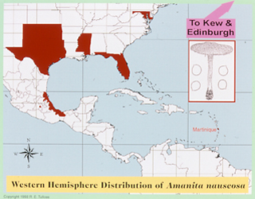

| name | Amanita nauseosa |
| name status | nomen acceptum |
| author | (Wakef.) D. A. Reid |
| english name | "Nauseous Lepidella" |
| synonyms |
=Amanita praegraveolens (Murrill) Singer |
| images |
 1. Amanita nauseosa, Roy. Bot. Gard., Kew, Surrey, England, U.K.  2. Amanita nauseosa, Florida, U.S.A.  3. Amanita nauseosa, Florida, U.S.A.  4. Amanita nauseosa, Florida, U.S.A.  5. Amanita nauseosa, map of Western Hemisphere distribution excluding collections from Botanical Gardens. |
| cap |
The cap of A. nauseosa is 60 - 220 mm wide, hemispherical to broadly convex to nearly plane, usually with a low broad umbo, dry, white to cream colored to buff, pinkish, or reddish tinged to pale ochraceous buff, with a nonstriate, appendiculate margin. The volva is present as a smooth, continuous white to buff floccose to mealy floccose layer covering the cap, with the palest upper layer disappearing and the remainder becoming areolate by a division into irregular polygons, finally as concentrically arranged, low scales particularly flattened near the margin. The volva may become yellowish brown or orange-brown. |
| gills |
The gills are approximate to free, close, and white or frosty white or with a light pinkish tinge. The short gills are attenuate. |
| stem | The stem is 90 - 220 × 10 - 25 mm, narrowing downward or roughly cylindric, often flaring at the apex, whitish at first, and becoming colored like the cap or yellowish to yellowish brown or orange-brown. The volva is often present as pulverulent-floccose material, is densest on the upper stem, and is not easily noticed (in scattered fibrils) on the lower stem. The volva on the stipe is colored as, and has the same color changes as, the volval material on the cap. |
| odor/taste | The odor is intense and persistent, something like an old mouse nest or "stale tiger's urine." The odor persists in dried specimens of the present species. |
| spores | The spores measure (6.0-) 7.0 - 10.0 (-13.5) × (4.9-) 6.1 - 8.3 (-11.1) µm and are amyloid and globose to subglobose to broadly ellipsoid (infrequently ellipsoid). Clamps are present at bases of basidia. The spores of this species appear to be unusually susceptible to variation in shape, possibly responding to the amount of water present in the environment. Regularly watered areas such as greenhouses produce specimens with the most nearly globose average spores. |
| discussion |
Amanita nauseosa is very likely to be POISONOUS. Its ingestion has been associated with kidney failure in a single case from Baltimore, Maryland, USA. Unfortunately, I know little more than the species (determined by me from dried material) and the basic fact of kidney failure. This species was originally described from a greenhouse in the Botanical Gardens at Kew. It is also known to have occurred in the Botanical Gardens at Edinburgh and in Mexico City. The natural range of the  species appears to lie in the Caribbean Region—both in the island nations and in the states of Mexico and the U.S. along the Gulf of Mexico. Within its natural range it often occurs in treeless habitats. Reports from Australia (see, e.g., (Wood, 1997))need to be confirmed because of the presence of similar, but distinct taxa in Africa ( A. roseolescens (Pearson & Stephens) Bas and A. foetidissima D. A. Reid & Eicker nom. inval.) and Asia (A. flavofloccosa Nagas. & Hongo and A. manicata (Berk. & Broome) Pegler). In Wood's description of Australian material he mentions the possibility that it could be an imported taxon. However in the description of the Australian material, it is noteworthy that no mention of the ochraceous, orange, or reddish colors that appear in age in the material of the Americas is mentioned. It is clear for the description that the older material as well as younger material had been examined. In addition, the range of spore shape is very limited compared to that found in A. nauseosa. The spores are much rounder (all numeric variables indicative of spore shape reported by Wood are within the lowest six-percent of the corresponding variables I have obtained after measuring nearly six-hundred spores from A. nauseosa). Whether this is of taxonomic importance or is a result of weather conditions is unknown to us.The taxa listed in the previous paragraph, along with A. nauseosa, are assigned to Bas' stirps Nauseosa. Interestingly, A. foetidissima was reported as edible in its original description. (Note: In the map insert, whole states are colored when A. nauseosa has been reported within a state.) The present species is one of the taxa of section Lepidella that are found growing without any apparent woody plant symbiont.—R. E. Tulloss |
| brief editors | RET |
| name | Amanita nauseosa | ||||||||||||||||||||||||||||||||||||
| author | (Wakef.) D. A. Reid. 1966. Beih. Nova Hedwigia suppl. 11: 25, fig. 7, 13, pl. 7. | ||||||||||||||||||||||||||||||||||||
| name status | nomen acceptum | ||||||||||||||||||||||||||||||||||||
| english name | "Nauseous Lepidella" | ||||||||||||||||||||||||||||||||||||
| synonyms |
≡Lepiota nauseosa Wakef. 1918. Bull. Misc. Inform. Kew: 230.
=Lepiota praegraveolens Murrill. 1939a. Bull. Torrey Bot. Club 66: 153. ≡Amanita praegraveolens (Murrill) Singer. 1951 ["1949"]. Lilloa 22: 388.
=Venenarius malodorus Murrill. 1945b. Quart. J. Florida Acad. Sci. 8: 183. ≡Amanita malodora (Murrill) Murrill. 1945b. Quart. J. Florida Acad. Sci. 8: 198.
=Amanita ingrata Pegler. 1978. Kew Bull., Addit. Ser. 9: 293, fig. 53a-3; pl. 7H. The editors of this site owe a great debt to Dr. Cornelis Bas whose famous cigar box files of Amanita nomenclatural information gathered over three or more decades were made available to RET for computerization and make up the lion's share of the nomenclatural information presented on this site. | ||||||||||||||||||||||||||||||||||||
| MycoBank nos. | 326102, 154408, 516990, 254094, 308570, 325444, 108668 | ||||||||||||||||||||||||||||||||||||
| GenBank nos. |
Due to delays in data processing at GenBank, some accession numbers may lead to unreleased (pending) pages.
These pages will eventually be made live, so try again later.
| ||||||||||||||||||||||||||||||||||||
| holotypes |
V. malodora & L. praegraveolens—FLAS. L. nauseosa & A. ingrata—K. | ||||||||||||||||||||||||||||||||||||
| type studies | Jenkins. 1979. Mycotaxon 10: 181 (V. malodora), 187 (L. praegraveolens). | ||||||||||||||||||||||||||||||||||||
| revisions |
A. nauseosa—Bas. 1969. Persoonia 5: 376 & figs. 78-80. A. praegraveolens—Ibid.: 375 & figs. 74-77. Tulloss, here. | ||||||||||||||||||||||||||||||||||||
| selected illustrations |
Bas. 1969. Persoonia 5: 373, 377, figs. 74-80. Weber and Smith. 1985. Field Guide S. Mushr.: pl. 139. Pérez-Silva and Herrera Suárez. 1991. Iconogr. Macromic. Mexico. I. Amanita: 91, pl. XXXI. | ||||||||||||||||||||||||||||||||||||
| intro |
The following text may make multiple use of each data field. The field may contain magenta text presenting data from a type study and/or revision of other original material cited in the protolog of the present taxon. Macroscopic descriptions in magenta are a combination of data from the protolog and additional observations made on the exiccata during revision of the cited original material. The same field may also contain black text, which is data from a revision of the present taxon (including non-type material and/or material not cited in the protolog). Paragraphs of black text will be labeled if further subdivision of this text is appropriate. Olive text indicates a specimen that has not been thoroughly examined (for example, for microscopic details) and marks other places in the text where data is missing or uncertain. The following material not directly from the protologs of the present taxa and not cited as the work of another researcher is based on original research by R. E. Tulloss and C. Rodríguez Caycedo. | ||||||||||||||||||||||||||||||||||||
| pileus | 60 - 220 mm wide, white to cream color to buff tinged to pinkish beige to reddish beige to rosy isabelline to Pale Ochraceous Buff (1YR 8.2/5.0), sometimes more strongly pigmented when young and fading with exposure, hemispheric to broadly convex to nearly plane, often with low and broad umbo, surface dry and radially fibrillose; context white, sometimes with yellowish or pale orangish [e.g., Pale Orange-Yellow (1Y 8.0/8.0)] stains near stipe apex, otherwise unchanging when cut or bruised, soft (sometimes even in dried mature material—sometimes even if surface hard due to drying), 12–15 mm thick; margin nonstriate, appendiculate, at first incurved; universal veil as smooth continuous white to buff floccose to mealy floccose covering of pileus before expansion of pileus and sometimes remaining beyond start of sporulation (e.g., see paratype of A. ingrata), then palest surface layer disappearing and remainder becoming areolate by division into irregular polygons, finally as concentrically arranged low scales particularly flattened near margin or completely detersile (Williams 37), developing yellowish brown or ochraceous brown or Cinnamon (7.5YR 6.2/6.0) or Ochraceous Tawny (8.5YR 5.5/7.0) tints or brown with reddish brown edges. [Note: Watling 13126 produced copiously an amber-colored liquid when fresh flesh was broken or exposed.] | ||||||||||||||||||||||||||||||||||||
| lamellae | approximate to free, close, white or frosty white, sometimes (at least before sporulation well established) with light pinkish tint [e.g., Pale Pinkish Buff (10YR 8.2/2.5) or pinkish beige or pale pink or very pale pinkish cream], unchanging when cut or bruised, 8± – 20 mm broad, edges and faces concolorous, occasionally forking, sometimes with subserrate edge; lamellulae attenuate. | ||||||||||||||||||||||||||||||||||||
| stipe | 90–220 × 10–25 mm, narrowing downward or roughly cylindric, often flaring at apex, unpolished to subfibrillose, longitudinally striate, whitish at first, becoming colored like pileus and often becoming yellowish to brownish yellow to yellowish brown [e.g., Ochraceous Buff (1YR 8.0/6.0)] to brown from handling, sometimes deeply inserted in substrate; bulb very small or absent; context white, sometimes with yellowish stains as in pileus context, solid; partial veil thin, ample and submembranous to membranous in nature, very weakly submembranous in Botanical Garden material (even then continuous over lamellae at first, then as small patches on pileus margin), apical to subapical, pallid at first (at least in “button” stage), often tearing during expansion of pileus and leaving dingy yellowish fragments on stipe apex and pileus margin, sometimes largely left on stipe and then hanging like ragged skirt, eventually disappearing entirely, fibrillose beneath, with edged slightly thickened by universal veil material; universal veil often pulverulent-floccose and densest on upper stipe where protected under partial veil for greatest time during stipe elongation, pallid at first (at least in “button” stage), brown on exposure and darkening on handling, on lower stipe as scattered fibrils and not easily noticed. | ||||||||||||||||||||||||||||||||||||
| odor/taste | Odor penetrating and unpleasant, “very strong and disagreeable, earthy mixed with something worse” (Murrill 1939), “musty” (Murrill 1945b), “sickly and nauseating...difficult to define; although strong, penetrating and unpleasant there is a heavy sweetish component” (Reid 1966), “strong, meaty, disagreeable” (D. P. Lewis 6117). Still strongly noticeable in exsiccata twenty or more years old, then somewhat like an old, sour-smelling mouse nest. Taste “decided, but not specially unpleasant” (Murrill 1939). | ||||||||||||||||||||||||||||||||||||
| macrochemical tests |
none recorded. The species is POISONOUS—apparently causing malfunction of the kidneys (see discussion, below). | ||||||||||||||||||||||||||||||||||||
| pileipellis | apparently absent; with zone of somewhat increased density between pileus context and universal veil, intergrading into universal veil, containing interwoven vascular hyphae denser than in either adjacent tissue. | ||||||||||||||||||||||||||||||||||||
| pileus context | filamentous, undifferentiated hyphae 4.2–7.4 µm wide, plentiful; acrophysalides dominant, subglobose to ovoid to ellipsoid, up to 139 × 66 µm; vascular hyphae 3.9–16.1 µm wide, plentiful, branching, often loosely coiling, distributed throughout context; clamps common. | ||||||||||||||||||||||||||||||||||||
| lamella trama | bilateral, divergent, narrow, with central stratum incompletely rehydrating in most specimens examined; wcs = 20 – 35 µm; angle of divergence shallow; filamentous, undifferentiated hyphae 1.4–6.0 µm wide, branching, tangled and interwoven, with intercalary inflated cells in central stratum obscured by hyphae (ellipsoid to ovoid to subfusiform to clavate, up to 102 × 27 µm); divergent, terminal, inflated cells not observed; vascular hyphae 2.9 – 6.5 µm wide, scarce (relatively common in one section from Williams 37); clamps present in subhymenial tree. | ||||||||||||||||||||||||||||||||||||
| subhymenium | wst-near = 5 – 20 µm [occasional basidia appearing to arise from within central stratum]; wst-far = 25 – 35 (–45) µm; having frequently branching structure of short uninflated hyphal segments, partially inflated segments, and irregular inflated cells, with latter giving appearance of cellular regions in some sections; major axis of these elements perpendicular to central stratum when within two cells of base of basidium, otherwise at various angles created by branching and having no relation to angle of divergence from central stratum, with basidia arising from ends of uninflated segments and occasionally singly or in small group from inflated cell; clamps plentiful. | ||||||||||||||||||||||||||||||||||||
| basidia | 29–48 × 6.2–10.8 µm, thin-walled or (infrequently) with wall up to 0.5 µm thick, dominantly 4-, also 2-sterigmate; sterigmata up to 10.8 × 2.8 µm; clamps plentiful and prominent. | ||||||||||||||||||||||||||||||||||||
| universal veil | On pileus, upper, easily lost layer [reported by Reid (1966) and observed in paratype of A. ingrata]: filamentous, undifferentiated hyphae 2.2 – 7.6 µm wide, branching, thin-walled, much less common than in lower layer, least common near surface, all hyaline and colorless, more narrow in comparison to width of inflated cells than in lower layer, individual or in sparsely populated fascicles; inflated cells dominating, terminal and in chains, broadly fusiform to fusiform to clavate to subcylindric to broadly ellipsoid to ellipsoid to subovoid, up to 39 × 19.1 μm, shorter and proportionately broader than in lower layer, with tip cells rostrate, with some having thickened walls that appear yellow in optical cross-section (from slightly thickened to 0.8 µm thick), but none with distinctly yellow walls as seen in lower layer; vascular hyphae not observed; clamps present, but not as frequent as in lower layer. On pileus, lower layer (near disk, young specimen): with cloud of yellowish to yellow-brown matter often coming from section when mounted in dilute KOH solution, with elements having periclinal orientation at least in lower half; filamentous, undifferentiated hyphae 1.5 – 10.0 µm wide, branching, sparse, at times subfasciculate, occasionally with yellow walls (and then with walls thin or up to 0.5 µm thick and clamps having yellow walls); inflated cells dominating, in tangled chains, mostly elongate elliptic to narrowly clavate to fusiform to narrowly fusiform, up to 155 [200 per Reid (1966) in fresh material] × 38 µm, with terminal cells closer to elliptic or fusiform-rostrate, thin-walled, with colorless contents, sometimes with slightly thickened (or internally encrusted?) yellow walls (no more than 0.5 µm thick); vascular hyphae 2.0 – 10.0 µm wide, relatively plentiful (as in pileus context) at least locally, loosely coiling, unevenly distributed in some specimens, branching; clamps common to plentiful. On pileus (near disk, old specimen): 10 – 15 µm thick, yellow, gelatinized layer; filamentous, undifferentiated hyphae 1.5 – 5.5 µm wide, criss-crossed, partially gelatinized, dominant; well-defined holes in layer attributable to loss (by gelatinization and/or collapse) of inflated cells, up to 59 × 33 µm, ovoid to ellipsoid to broadly clavate; refractive (vascular?) hyphae 1.0± µm wide, uncommon. On stipe: as thin, small scales along much of stipe, yellow, with all elements extensively gelatinized, having appearance of thick fascicles and plaques of subparallel elements; filamentous, undifferentiated hyphae 1.5 – 7.5 µm wide, plentiful, with strong subparallel arrangement; inflated cells elongate to ellipsoid, up to 60 × 33 µm, in chains with major axis aligned subparallel to surrounding hyphae, plentiful; vascular hyphae not distinguishable if present. | ||||||||||||||||||||||||||||||||||||
| stipe context | longitudinally acrophysalidic; filamentous, undifferentiated hyphae 2.2–9.1 µm wide, branching, plentiful, some with yellow and slightly thickened walls, occasionally with constrictions at septa, with occasional very narrowly clavate to very narrowly fusiform intercalary cells; acrophysalides thin-walled, plentiful, up to 231 [300 per Bas (1969)] × 45 µm; vascular hyphae absent to locally plentiful, 9.1–14.7 µm wide, branching, sometimes loosely coiled; clamps common to plentiful. | ||||||||||||||||||||||||||||||||||||
| partial veil | filamentous, undifferentiated hyphae 1.0–5.8 (–11.2) µm wide, occasionally with intercalary subfusiform elements (up to 12.8 µm wide) having slightly thickened walls, occasionally with pale yellowish walls, becoming partially to extensively gelatinized, dominantly with subradial arrangement and these often in fascicles, plentiful to dominant, branching, densest at surface, with depressions (crater-like) that apparently indicate former presence of inflated cells; inflated cells terminal, singly or in short chains, subfusiform to fusiform to narrowly clavate (up to 87 × 19.5 µm), also with small ellipsoid to clavate cells near bases of chains, plentiful, with walls thin or slightly thickened or up to 0.8 µm thick; vascular hyphae absent or occasional, 7.7–8.4 µm wide, branching, loosely coiling or sinuous; on underside near edge having material of universal veil type—inflated cells, plentiful, dominant, terminal or in short chains, globose to subglobose to ovoid to broadly clavate, up to 55 × 48 µm, some with yellow walls, at times with granular contents; clamps present. | ||||||||||||||||||||||||||||||||||||
| lamella edge tissue | t.b.d. | ||||||||||||||||||||||||||||||||||||
| basidiospores |
Bas (1969) as A. nauseosa: [30/3/1] 7.0 - 9.0 (-9.5) × 6.5 - 8.0 (-9.0) μm, (Q = 1.0 - 1.10 (-1.15); Q = 1.05). Bas (1969) as A. praegraveolens: [35/4/4] 7.0 - 9.0 (-9.5) × 6.5 - 8.0 (-9.0) μm, (Q = 1.0 - 1.30; Q = 1.05 - 1.20). from RET type study of A. nauseosa: [20/1/1] (6.3-) 6.5 - 8.4 (-10.0) × (5.7-) 6.0 - 7.1 (-7.8) μm, (L = 7.4 μm; W = 6.5 μm; Q = (1.03-) 1.05 - 1.21 (-1.28); Q = 1.13). [Note: In 1993, many of the spores of the holotype were found to be damaged.] from RET type study of A. malodora: [32/2/1] (6.2-) 7.0 - 9.8 (-10.8) μm, (L = 7.8 - 8.0 μm; L' = 7.9 μm; W = 6.7 - 6.9 μm; W' =6.9 μm; Q = (1.03-) 1.07 - 1.27 (-1.32); Q = 1.16; Q' = 1.16). from RET type study of A. praegraveolens: [17/1/1] (6.5-) 7.5 - 10.8 (-11.2) × (6.2-) 7.0 - 8.5 (-9.2) μm, (L = 9.0; W = 7.7 μm; Q = (1.07-) 1.10 - 1.28 (-1.32); Q = 1.17). from RET study of A. ingrata original material: [20/1/1] (6.9-) 7.0 - 9.8 (-11.1) × (6.0-) 6.3 - 7.7 (-7.8) μm, (L = 8.5 μm; W = 7.0 μm; Q = (1.06-) 1.08 - 1.38 (-1.46); Q = 1.22). [Note: The holotype is sterile and immature; the spore measurements presented above are from the sole paratype.] composite of data from all material revised by RET/CRC [610/30/20] (6.0-) 7.0 - 10.0 (-13.5) × (4.9-) 6.1 - 8.2 (-11.1) µm, (L = 7.4 - 9.4 (-9.6) µm; L’ = 8.4 µm; W = 6.3 - 7.7 (-7.9) µm; W’ = 7.1 µm; Q = (1.0-) 1.05 - 1.38 (-1.86); Q = (1.08-) 1.09 - 1.33 (-1.34); Q’ = 1.19), hyaline, colorless, smooth, with walls thin to slightly thickened (less than 0.5 µm), amyloid to strongly amyloid, globose to subglobose to broadly ellipsoid to ellipsoid, rarely elongate, often at least somewhat adaxially flattened, sometimes expanded at one end, rarely strangulate, rarely malformed (e.g., pumpkin-shaped); apiculus sublateral, narrow, but not short, cylindric; contents granular to mono- or multiguttulate; white in deposit. | ||||||||||||||||||||||||||||||||||||
| ecology | Solitary to gregarious. Martinique: In lawn, not associated with any tree species. Veracruz edo., Mexico: At 70 - 700 m elev. In meadow or in disturbed perennially-leaved tropical forest. Florida, U.S.A.: in open, grassy area near stable (holotype of Lepiota praegraveolens) or under privet hedge (holotype of Venenarius malodorus) or in house yard near palm tree with no mycorrhizal plants evident. Mississippi, U.S.A.: In waste land without associated trees or in fairy rings on lawn under Quercusand Carya illinoensis (Wangenh.) K. Koch. U.K.: In greenhouses—in Gesneriaceae and Zingiberaceae house in huge troops in open beds under Costus spp. and other exotics and as noted under "collections examined" (holotype of Lepiota nauseosa; Reid s.n.; Simmonds and Pegler s.n.). | ||||||||||||||||||||||||||||||||||||
| material examined |
from revision by Bas (1969): U.K.: ENGLAND—Surrey - Richmond, Kew, Roy. Bot. Gard., Nepenthes House, ii.1918 E. M. Wakefield s.n. (holotype of L. nauseosa, K). from revision of A. praegraveolens by Bas (1969): U.S.A.: FLORIDA—Alachua Co. - Gainesville, 25.x.1938 W. A. Murrill F 18298 (holotype of V. praegraveolens, FLAS), 11.viii.1944 W. A. Murrill F 32707 (holotype of V. malodorus, FLAS), 26.vii.1944 W. A. Murrill F 32728 (FLAS), 23.vii.1950 W. A. Murrill s.n. (MICH). from type study of Amanita malodora by Jenkins (1979): U. S. A.: FLORIDA— Alachua Co. - Gainesville, 11.viii.1944 W. A. Murrill F 32707 (holotype of V. malodorus, FLAS). from type study of A. praegraveolens by Jenkins (1979): U. S. A.: FLORIDA—Alachua Co. - Gainesville, 25.x.1938 W. A. Murrill F 18298 (holotype of V. praegraveolens, FLAS). from Wolfe et al. (2012) voucher for sequencing: USA: ??—?? Co. - ??, ?? D. P. Lewis 6117 (??). RET: MARTINIQUE: Route de Didier, Cité Marsan, Fort de France, 9.x.1975 J.-P. Fiard 8C (paratype of A. ingrata, K) & 8D (holotype of A. ingrata, K). MÉXICO: DISTRITO FEDERAL—Univ. Nac. Autón. México, Jardín Botánico, exterior de la Ciudad Universitaria, vii.1971 E. Pérez-Silva s.n. (MEXU 7861; ENCB). JALISCO—Mpio. Autla - Sierra de Manantla, Predio Las Joyas, El Laurelito, s.d. G. Guzmán 28997 (RET 160-9; XAL n.v.). VERACRUZ—zona de Los Tuxtlas, 3 km S of Montepío, 22.vi.1969 G. Guzmán 7230 (ENCB; XAL as "A. praegraveolens"); btwn. San Andrés and Volcán San Martín, 11.vii.1972 G. Guzmán 10304 (BPI; ENCB); Laguna Chalchopan to Acayucan, 13.vii.1972 G. Guzmán 106333 (ENCB n.v.). U.S.A.: FLORIDA—Alachua Co. - Gainesville, 25.x.1938 W. A. Murrill F 18298 (holotype of L. praegraveolens, FLAS), 11.viii.1944 W. A. Murrill F 32707 (holotype of V. malodorus, FLAS; isotype, BPI 750464), 26.viii.1945 W. A. Murrill F 16968 (NY as A. malodora), 9.xi.1950 W. A. Murrill s.n. (BPI 750468, as "A. malodora"), 23.vii.1950 W. A. Murrill s.n. (BPI 750465, as "A. malodora"), W. A. Murrill s.n. (MICH => BPI 750466, as "A. malodora"), W. A. Murrill s.n. (MICH, specimen seen by C. Bas, as "A. praegraveolens"). Palm Beach Co. - W. Palm Beach, x.2000 Hanna Tschekunow s.n. (RET 320-7). Sarasota Co. - Sarasota, 4.vii.1986 Robert S. Williams 37 (RET 178-3). MARYLAND—Baltimore City - unkn. loc., [Note: there are four collections under A. malodora in BPI, including another isotype, all coll. & det. W. A. M. Also, check NY. May have to remove data on Guzmán 7230 unless it can be proven that it is not A. aureosylvatica. See also, RET 160-9, RET 422-5, 422-9.] | ||||||||||||||||||||||||||||||||||||
| discussion |
t.b.d. Spore measurement data from the type study of Amanita malodora by Jenkins (1979) is presented here: [-/-/-] 7.0 - 7.8 × 6.2 - 7.0 μm, (Q = 1.13 - 1.26; Q' = 1.14). This data differs greatly from spore data obtained by Tulloss (see basidiospores data field above) from the same collection. For this reason, the above data of Jenkins is not included in the basidiospores data field on this tab. Spore measurement data from the type study of A. praegraveolens by Jenkins (1979) is presented here: [-/-/1] (6.2-) 7.8 - 8.6 × (6.2-) 7.0 - 7.8 μm, (Q = 1.0 - 1.11; Q' = 1.04). The sporograph generated by this data is highly atypical for the species. For this reason, the above data is not included in the basidiospores data field on this tab. Tulloss' re-examination of the holotype of A. praegraveolens provided distinctly different results (see basidiospores data field, above). Spore measurement data from the protolog of A. ingrata (Pegler 1983)is presented here: [-/-/-] 8.0 - 11.5 × 6.5 - 8.5 μm, (L' = 9.7 ± 0.9 μm; W' = 0.5 μm; ((est.) Q = 1.23 - 1.36; Q' = 1.33). There are a number of indications that this data from the protolog is flawed; and so it is not included in the basidiospores data field above. The range of spore shape that can be extracted from the protolog data is unrealistically narrow. Indeed, the data from Tulloss' examination of the only fertile specimen in the original material suggests that data in the protolog may represent the result of a very small, or otherwise nonrepresentative sample. | ||||||||||||||||||||||||||||||||||||
| citations | —R. E. Tulloss and C. Rodríguez Caycedo | ||||||||||||||||||||||||||||||||||||
| editors | RET | ||||||||||||||||||||||||||||||||||||
Information to support the viewer in reading the content of "technical" tabs can be found here.
| name | Amanita nauseosa |
| name status | nomen acceptum |
| author | (Wakef.) D. A. Reid |
| english name | "Nauseous Lepidella" |
| images |
1. Amanita nauseosa, Roy. Bot. Gard., Kew, Surrey, England, U.K. 2. Amanita nauseosa, Florida, U.S.A. 3. Amanita nauseosa, Florida, U.S.A. 4. Amanita nauseosa, Florida, U.S.A. 5. Amanita nauseosa, map of Western Hemisphere distribution excluding collections from Botanical Gardens. |
| photo | Ellen Greer - (2-4) Florida, U.S.A. |
| drawing |
Dr. C. Bas - (1) Amanita nauseosa (reproduced by courtesy of Persoonia, Leiden, the Netherlands, (Bas, 1969)) RET - (4) Amanita nauseosa, map of Western Hemisphere distribution, excluding collections found in Botanical Gardens. |
| name | Amanita nauseosa |
| bottom links |
[ Keys & Checklists ] |
| name | Amanita nauseosa |
| bottom links |
[ Keys & Checklists ] |
Each spore data set is intended to comprise a set of measurements from a single specimen made by a single observer; and explanations prepared for this site talk about specimen-observer pairs associated with each data set. Combining more data into a single data set is non-optimal because it obscures observer differences (which may be valuable for instructional purposes, for example) and may obscure instances in which a single collection inadvertently contains a mixture of taxa.


Text and User-Generated Sporographs are published under the Creative Commons License.

In the case of a taxon page, image credits are on the 'image' tab.